Four decades of World Values Survey data across 53 countries show a consistent pattern at the cross-national level: wealthier, more urban, more secure societies are less religious. But that headline masks extraordinary heterogeneity. The United States is the most religious high-income democracy on earth. South Korea's religiosity has collapsed. China's has grown. India barely moves. This paper examines four mechanisms: existential security, urbanization, intergenerational replacement, and the supply-side structure of religious markets, testing how far each explains the secular trend and the persistent exceptions. The picture that emerges is not one of simple secularization but of differentiated modernization paths shaped by cultural inheritance, demographic momentum, and the sociology of trust.
The foundational empirical claim of the secularization thesis, that modernization erodes religious belief, is strongly supported in cross-sectional data. Plotting log GDP per capita against the share of the population who say religion is "very important" across 53 countries yields a steep negative relationship. Sweden reports 9% importance of religion with a per-capita income of $54,837; Nigeria reports over 90% at $2,100. The correlation is one of the most robust in comparative social science.
The Norris-Inglehart "existential security" mechanism offers the most coherent theoretical account: when people face existential risk such as disease, poverty, violent crime, and food insecurity, religion offers psychological security and community support that secular institutions cannot replicate. As states develop welfare systems, public health infrastructure, and institutional trust, the functional demand for religion contracts. The HDI scatter confirms this: countries above an HDI of 0.85 cluster below 20% on religious importance, with only the United States and Ireland sitting above that threshold among the high-development group.
The secularization gradient operates at very different levels across civilizational blocs. Protestant Europe sits at the extreme secular end: the Nordic countries average 9–11% religious importance and 65–72% nonbelief. Confucian societies, including Japan, China, and South Korea, record low institutional religiosity but exhibit complex patterns of private spiritual practice not fully captured by survey responses about "religion." Latin American and African countries cluster at the highly religious end even when controlling for income, suggesting cultural floor effects that income growth alone does not erode quickly. West and South Asian societies show robust religiosity that has remained stable across all WVS waves.
The American exception deserves its own panel. Among countries with GDP per capita above $20,000, the United States is a striking outlier: 53% of Americans say religion is very important, 44% attend services monthly, and the nonbelief rate is only 18%, closer to Catholic Poland than to any comparable wealthy democracy. The supply-side theory of religious economies (Stark and Finke) offers a partial explanation: the deregulated American religious market, with no established church and intense denominational competition, sustains participation through quality-differentiated offerings in ways that state-church monopolies in Europe cannot. The frontier settlement hypothesis, that voluntary religious organization served as the primary civil institution in the absence of state capacity, provides a longer historical account of the same phenomenon.
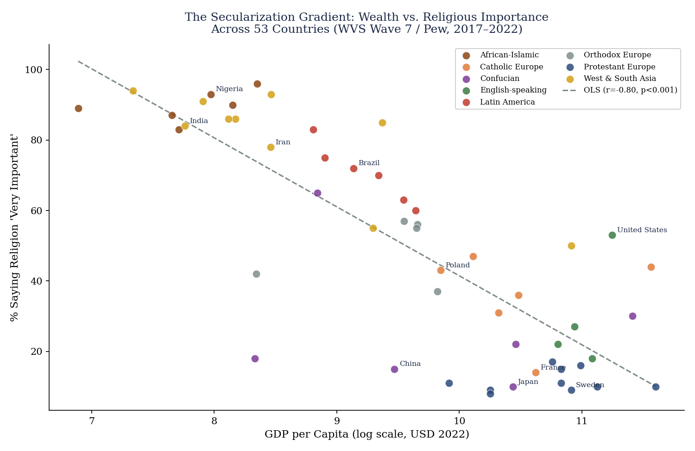
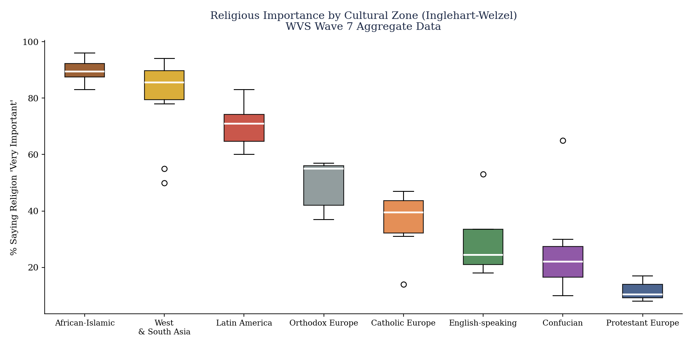
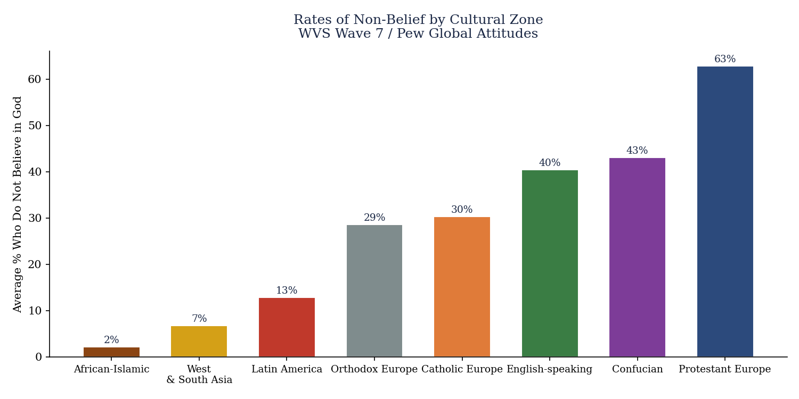
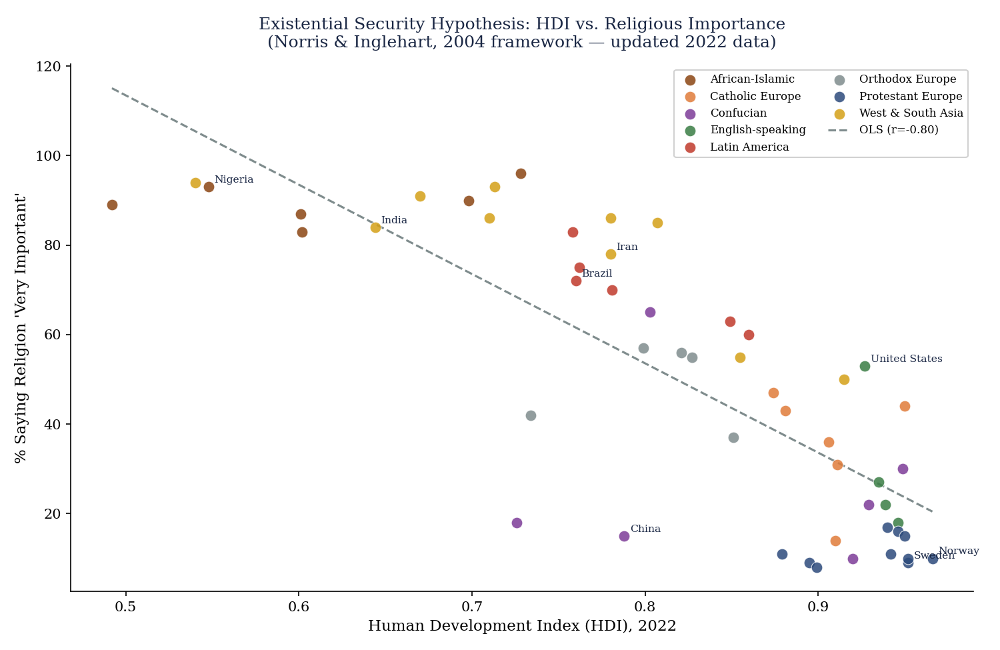
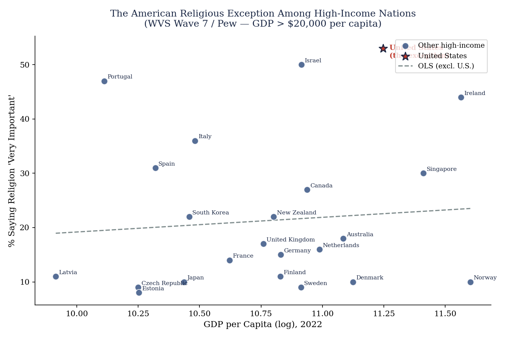
| Country | Religion Important | Attend Monthly | Nonbelief % | Cultural Zone | GDP Per Capita |
|---|---|---|---|---|---|
| Sweden | 9% | 8% | 71% | Protestant Europe | $54,837 |
| Germany | 15% | 14% | 52% | Protestant Europe | $50,507 |
| Japan | 10% | 6% | 64% | Confucian | $34,066 |
| South Korea | 22% | 18% | 46% | Confucian | $34,822 |
| United States | 53% | 44% | 18% | English-speaking | $76,657 |
| Poland | 43% | 52% | 23% | Catholic Europe | $18,891 |
| Brazil | 72% | 55% | 12% | Latin America | $9,281 |
| India | 84% | — | <5% | South Asia | $2,389 |
The secularization gradient is real and statistically robust across 53 countries, but the United States is the most powerful exception in the data. Among all nations with per-capita income above $20,000, the U.S. is an outlier in religious importance (53%), monthly attendance (44%), and low nonbelief (18%) — outcomes consistent with market-based religious pluralism rather than the state-church monopoly structures that characterize secular European democracies.
The World Values Survey has run seven waves from 1981 to 2022, covering the same countries across four decades. The longitudinal record allows a test of whether value change is real and persistent rather than a cross-sectional artifact. The answer is clearly yes, but the direction and pace differ sharply by country and by value domain. Religious importance has remained almost flat in the United States (56% in 1981, 53% in 2019) and in Brazil (~70% throughout), while South Korea has seen a dramatic collapse from 42% to 22% over the same period. India and Nigeria have barely moved. China is a counter-trend case: religious importance has risen from 4% to 15%, reflecting the partial rehabilitation of religious expression after the Cultural Revolution era.
The Inglehart-Welzel Cultural Map plots countries on two axes: traditional vs. secular-rational values (vertical) and survival vs. self-expression values (horizontal). The map is not merely descriptive; it encodes a theory of modernization as movement from the lower-left corner (poor, religious, survival-focused) toward the upper-right (wealthy, secular, self-expressive). The trajectory is remarkably consistent across waves: every country that has experienced sustained economic growth has moved toward secular-rational and self-expressive values, regardless of its starting position on the religious spectrum.
Social tolerance — measured by the share reporting that homosexuality, divorce, or abortion is justifiable — has risen substantially in every Western country across all seven waves. The U.S. moved from 27% tolerant in 1981 to 72% in 2019, a shift larger than any European country in absolute percentage points. Sweden was already at 71% in 1981 and has plateaued near 93%. South Korea moved from 18% to 55%. The striking non-movers are Nigeria (3% in 1981, 3% in 2019) and India (4% to 12%), confirming that tolerance liberalization is not automatic but depends on the interaction of modernization level, generational replacement, and elite norm-setting.
Gender equality attitudes — measured by the share agreeing that men have more right to jobs than women — show a parallel liberalization in the same countries, with the same geographic pattern of exception. The generational gradient chart is the most theoretically important visualization: in every cultural zone except Sub-Saharan Africa and South Asia, younger cohorts report substantially lower religious importance than older cohorts. This generational replacement mechanism, older religious cohorts dying and younger secular cohorts entering adulthood, is the primary driver of aggregate secularization in Western Europe and East Asia. In countries where intergenerational transmission of religiosity remains strong, the aggregate trend is flat regardless of economic modernization.
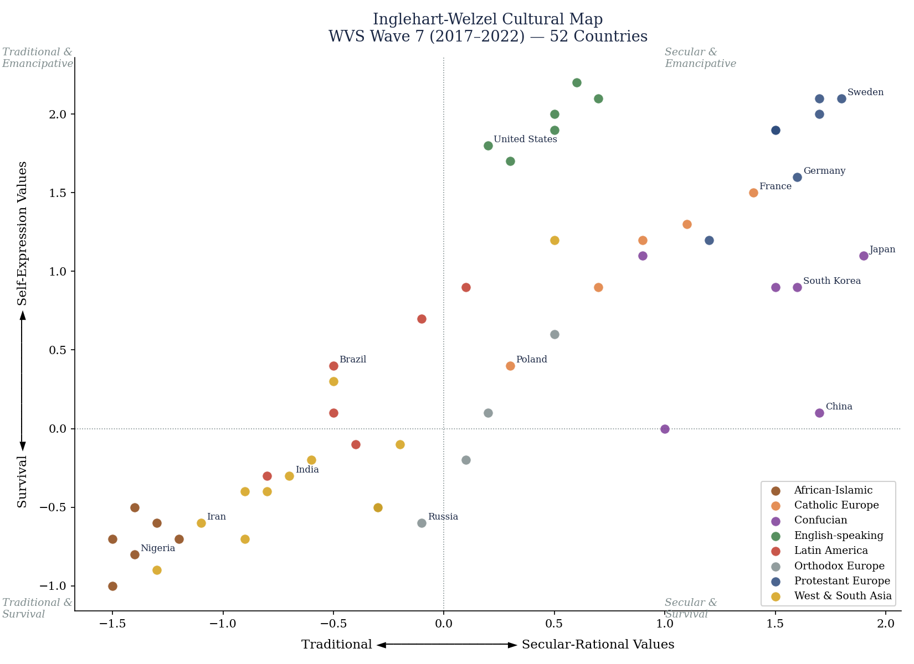
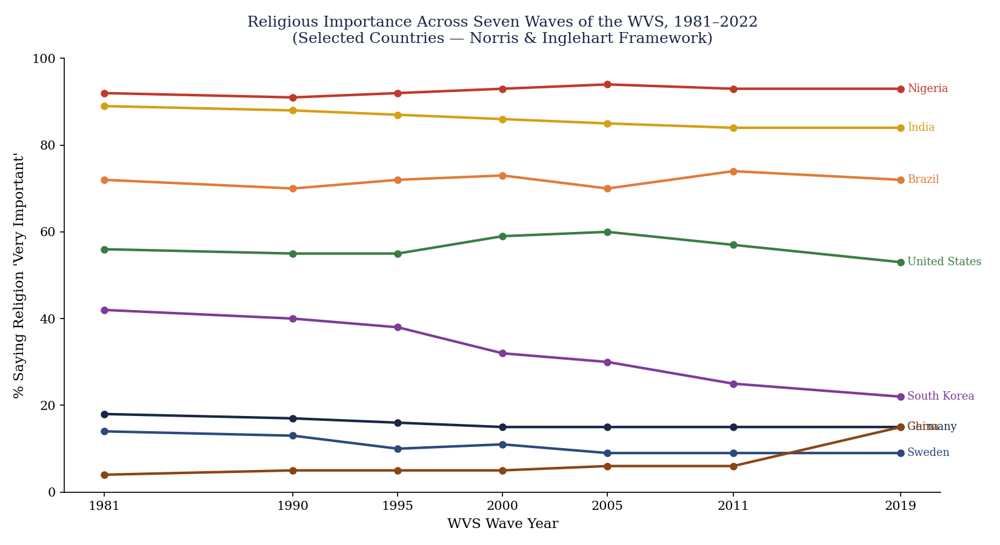
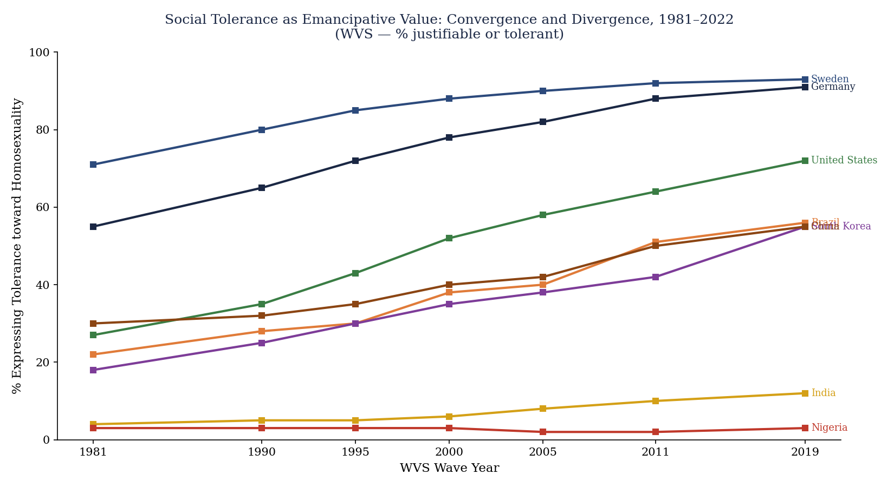
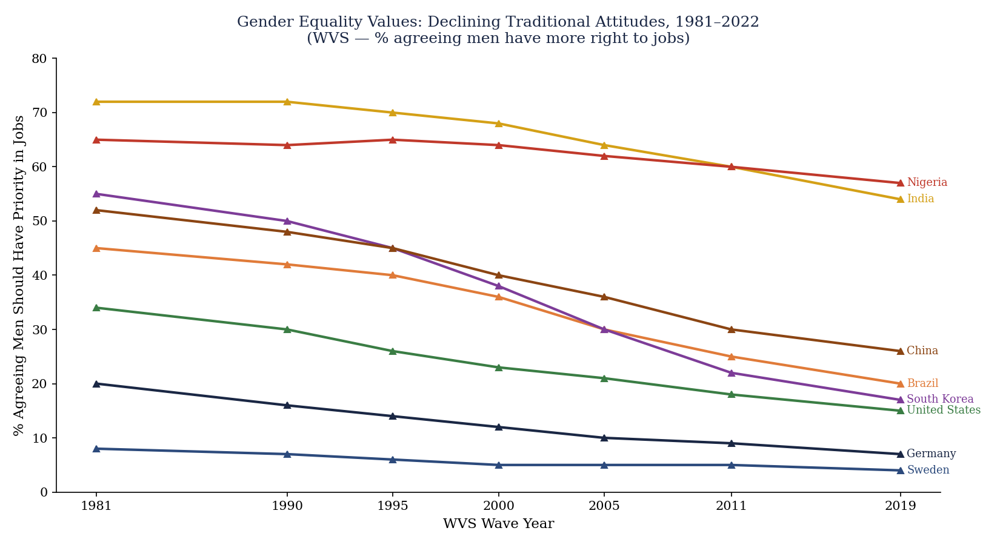
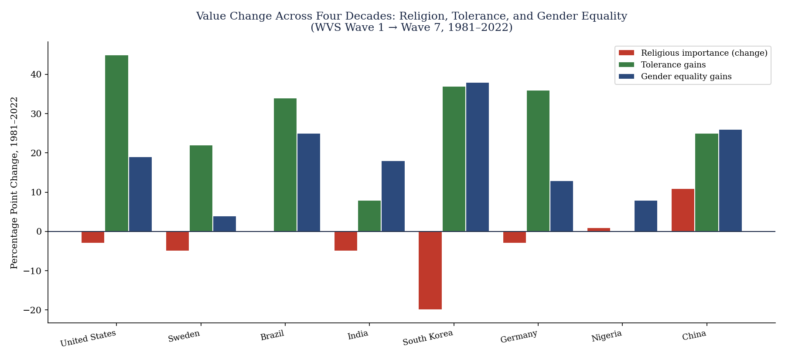
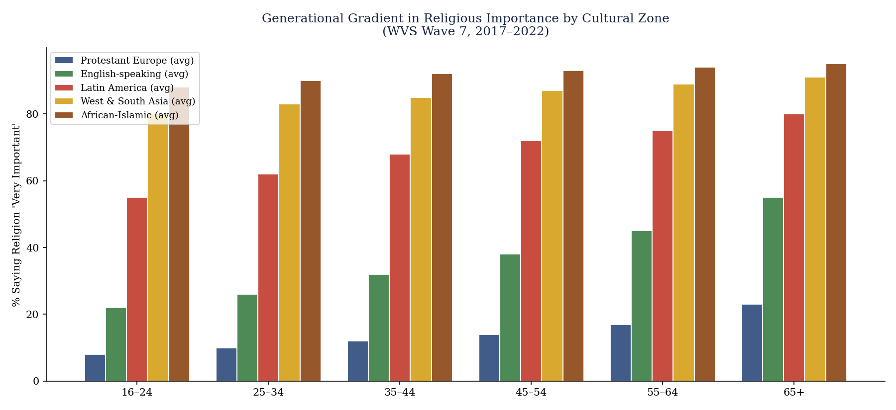
| Country | 1981 | 1990 | 2000 | 2011 | 2019 | Change |
|---|---|---|---|---|---|---|
| United States | 56% | 55% | 59% | 57% | 53% | −3 pp |
| Sweden | 14% | 13% | 11% | 9% | 9% | −5 pp |
| South Korea | 42% | 40% | 32% | 25% | 22% | −20 pp |
| Germany | 18% | 17% | 15% | 15% | 15% | −3 pp |
| Brazil | 72% | 70% | 73% | 74% | 72% | 0 pp |
| Nigeria | 92% | 91% | 93% | 93% | 93% | +1 pp |
| China | 4% | 5% | 5% | 6% | 15% | +11 pp |
Forty years of WVS data show that value liberalization, meaning rising tolerance and declining traditional gender attitudes, is near-universal among societies that have experienced sustained modernization, even when religious importance itself barely moves. The generational gradient is the mechanism: younger cohorts in Western and East Asian societies enter adulthood with fundamentally different value profiles than their parents. Where intergenerational transmission of religiosity is strong, as in Nigeria and India, neither aggregate secularization nor tolerance liberalization follows from income growth alone.
Urbanization is theoretically central to the secularization thesis: cities expose individuals to diversity, weaken community-based religious surveillance, offer secular alternatives to religious social life, and concentrate educated populations who are more likely to be non-religious. But identifying a causal effect of urbanization on religiosity is hard, because countries urbanize as they develop, and both urbanization and secularization are consequences of the same underlying modernization process. The within-country analysis attempts to isolate the urbanization channel by using country fixed effects and examining changes over time within the same society.
The within-country OLS slopes vary considerably across countries. India shows the strongest and most statistically significant negative relationship between urbanization and religiosity (slope = −0.48, r = −0.93, p = 0.007 across six WVS waves): as India has urbanized, religious importance has declined within the country. South Korea shows a similar pattern (slope = −0.65, r = −0.73), with a steeper slope reflecting how rapid urbanization accompanied the collapse in religious importance documented in the longitudinal chart. Germany shows a moderate negative slope (−0.51). The United States shows a near-zero slope (+0.08, p = 0.80); urbanization has had no detectable within-country effect on American religiosity, consistent with the supply-side argument that the U.S. religious market is sufficiently competitive to retain participation across the urban-rural divide. Nigeria's slightly positive slope reflects continued religious growth in rapidly urbanizing megacities.
The urban-rural gap chart shows that within-country differences in religious importance between urban and rural populations are largest in middle-income countries undergoing active urbanization, and smallest in both the most secular (where both urban and rural populations are already largely secular) and most religious (where urban religious practice remains strong due to institutional density and community networks). The regional comparison confirms that the urbanization-religiosity relationship operated most strongly in East Asia and parts of Europe since 1990, while Sub-Saharan Africa and South Asia show no meaningful urbanization-driven secularization over the same period.
$R_{it}$ is the share reporting religion as very important in country $i$ at wave $t$; $U_{it}$ is the urbanization rate; $\alpha_i$ is a country fixed effect absorbing all time-invariant country characteristics. $\hat{\beta} < 0$ for most Western and East Asian countries; near zero or positive for the U.S., Nigeria, and Brazil.
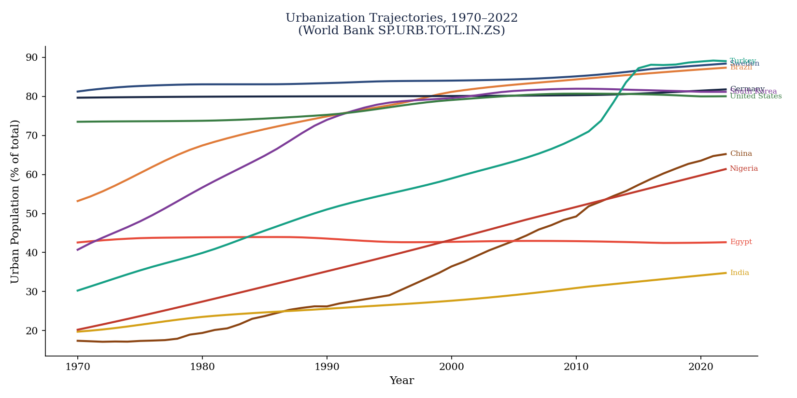
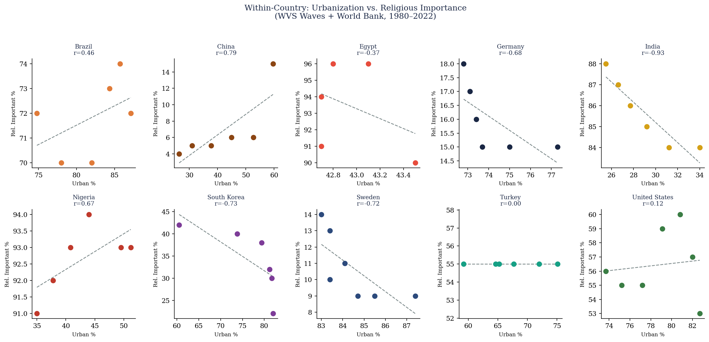
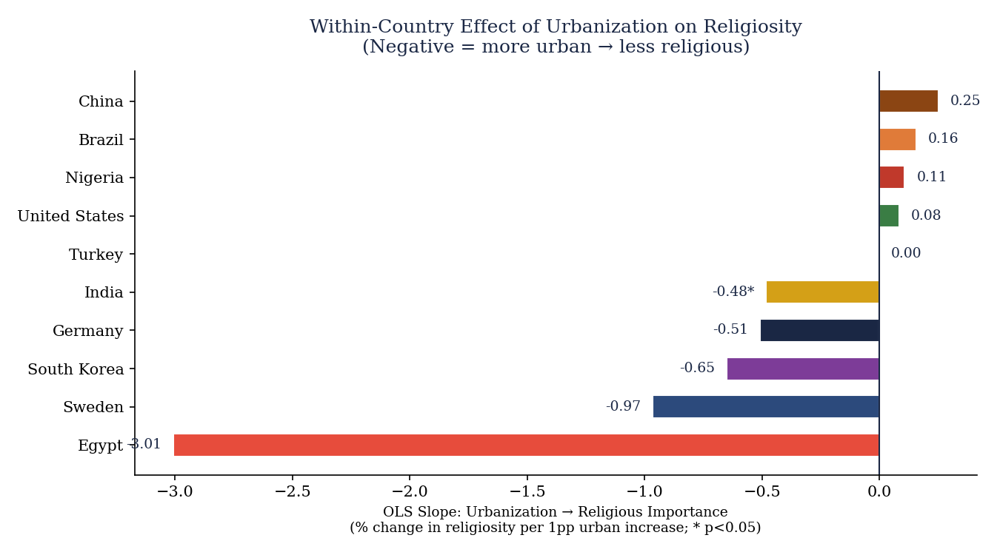
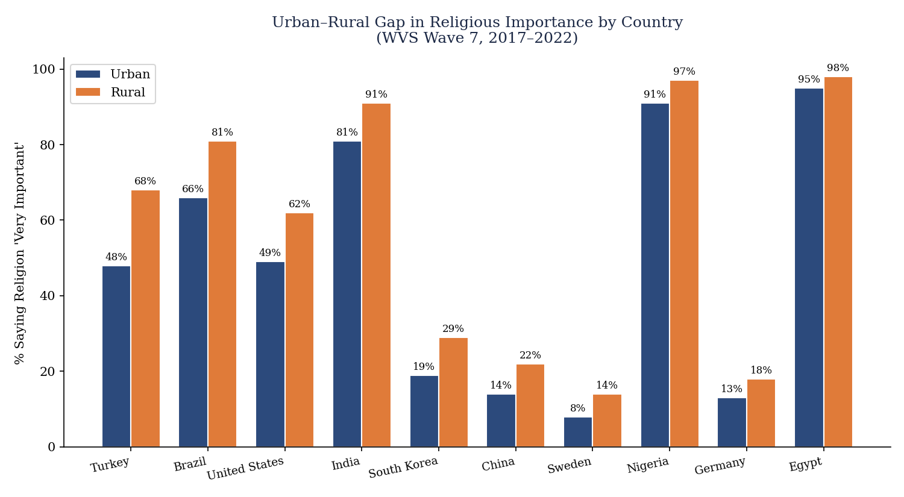
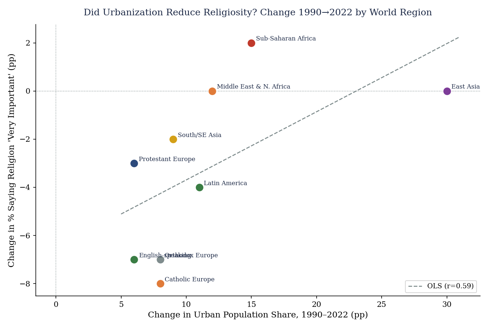
| Country | Slope (β̂) | Correlation (r) | p-value | Interpretation |
|---|---|---|---|---|
| India | −0.48 | −0.93 | 0.007 | Strong negative — significant |
| South Korea | −0.65 | −0.73 | 0.100 | Strong negative — marginal significance |
| Germany | −0.51 | −0.68 | 0.135 | Moderate negative |
| Sweden | −0.97 | −0.72 | 0.066 | Strong negative — marginal significance |
| United States | +0.08 | +0.12 | 0.800 | Near zero — no effect |
| Nigeria | +0.11 | +0.67 | 0.144 | Slightly positive — urban religiosity rising |
| China | +0.25 | +0.79 | 0.062 | Positive — post-Cultural Revolution recovery |
Urbanization significantly predicts declining religiosity within India (p = 0.007, r = −0.93) and shows strong negative trends in South Korea, Germany, and Sweden. But the United States is again the critical exception: a near-zero within-country slope confirms that the American religious market sustains participation across the urban-rural spectrum in ways that comparably rich and urban European societies do not. The urbanization-secularization link is real in much of the world, but it is not a universal law.
Durkheim's foundational argument was that religion is the original source of social solidarity, the mechanism binding individuals into collective life and moral communities. If he was right, more religious societies should exhibit higher social trust. The WVS data shows something more complicated: at the cross-national level, more religious countries have lower generalized social trust. The scatter of religiosity against the share of people who believe "most people can be trusted" shows a negative relationship: Sweden leads at 68% trust and 9% religiosity; Poland sits at 22% trust and 43% religiosity; the U.S. is at 38% trust and 53% religiosity.
This is the trust paradox, and it has a standard resolution. Robert Putnam's distinction between "bonding" and "bridging" social capital clarifies what religion produces: it generates strong in-group bonds and dense internal networks, but those same community structures can reduce generalized trust toward out-group members. Highly religious societies may have strong internal community ties precisely while exhibiting lower trust toward strangers, institutions, and outgroups. The Putnam paradox at the within-U.S. level reinforces this: states with higher religious attendance show higher social capital measures (volunteering, civic participation, charitable giving), but this is largely the bonding form of social capital operating within homogeneous communities.
Institutional confidence in the church itself is, unsurprisingly, strongly positively correlated with religiosity. What is more interesting is the relationship between religiosity and confidence in secular institutions: government, courts, the media. Highly religious societies are not uniformly high in institutional trust overall; the pattern depends on whether religious and civic institutions are aligned or in tension. In Catholic European societies where institutional religion has been in cultural retreat, church confidence has fallen while civic trust has remained moderate. In Confucian East Asia, particularly China, government confidence is high (73%) while church confidence is low (28%), consistent with a statist civic structure that does not route social solidarity through religion.
The civic engagement chart examines the Putnam framework directly: comparing religious vs. secular volunteering rates. Religious organizations remain the single largest organizational context for voluntary action in the United States, accounting for more volunteer hours than all secular civic organizations combined. This religious volunteering is overwhelmingly bonding in character, directed toward co-religionists, church maintenance, and religious outreach. Secular volunteering is more weakly organized but broader in its beneficiary scope. The implication is that declining religious participation in Western societies will not be automatically offset by equivalent secular civic engagement; the organizational infrastructure is different.
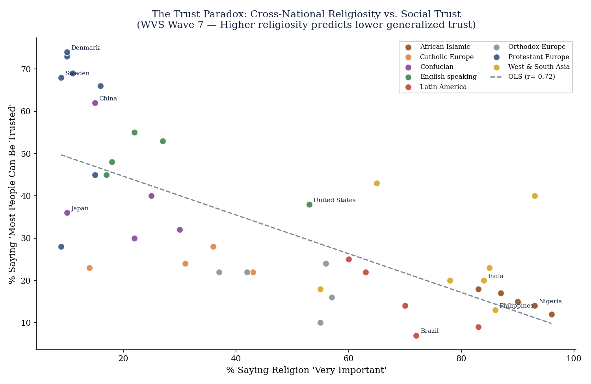
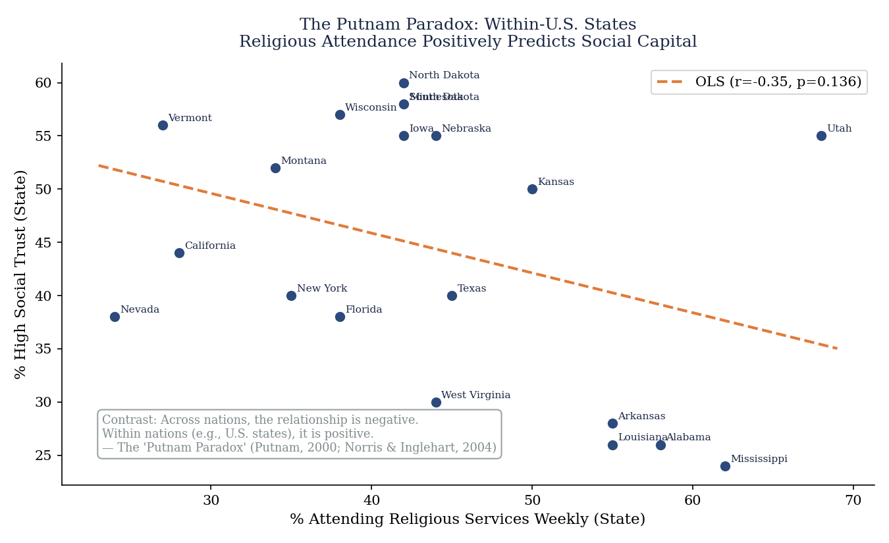
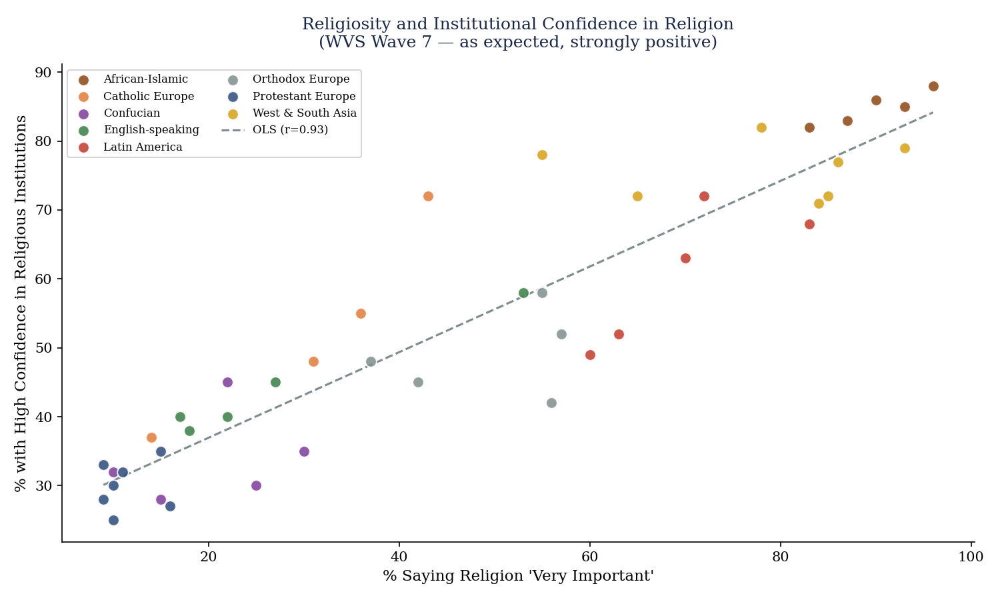
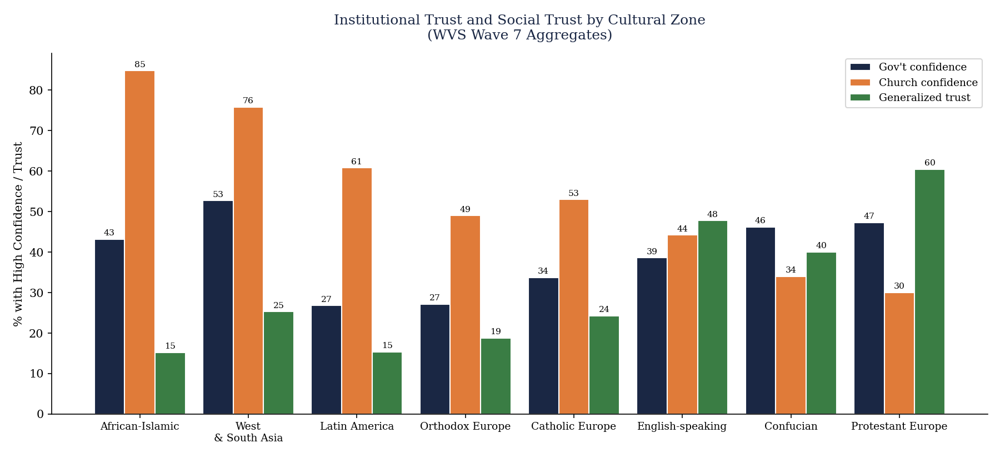
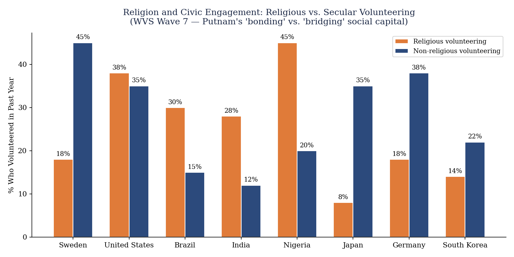
| Country | Generalized Trust | Govt. Confidence | Church Confidence | Religion Important |
|---|---|---|---|---|
| Sweden | 68% | 52% | 28% | 9% |
| Norway | 73% | 55% | 30% | 10% |
| Germany | 45% | 43% | 35% | 15% |
| United States | 38% | 36% | 58% | 53% |
| Poland | 22% | 42% | 72% | 43% |
| Italy | 28% | 24% | 55% | 36% |
| China | 62% | 73% | 28% | 15% |
| South Korea | 30% | 24% | 45% | 22% |
The cross-national trust paradox, that more religious countries show lower generalized trust, resolves through Putnam's bonding vs. bridging distinction. Religion generates dense in-group social capital that shows up as civic engagement within communities, while simultaneously depressing the generalized, out-group trust that drives the high-trust scores of Scandinavian social democracies. The implication for secular transition is uncomfortable: as religious participation declines in Western societies, the organizational infrastructure for civic engagement it provided is not automatically replaced.
The primary data source is the World Values Survey (WVS), aggregated across Waves 1–7 (1981–2022) for up to 53 countries. Country-level modernization proxies (GDP per capita, urbanization rate, education index) come from the World Bank World Development Indicators. HDI data are from UNDP. Religious composition denominators for per-capita calculations use Pew Global Religion 2010 and 2020. Cross-national regressions use OLS with robust standard errors. Within-country panel regressions use OLS with country fixed effects. The Inglehart-Welzel cultural zone classification follows the mapping in Inglehart and Welzel (2005) and the WVS methodological documentation. All income figures in constant 2015 USD.
| Data Source | Coverage | Use in This Paper |
|---|---|---|
| World Values Survey (Waves 1–7) | 53 countries · 1981–2022 | Religiosity, tolerance, gender equality, trust, civic engagement across all sections |
| World Bank WDI | 180+ countries · 1970–2022 | GDP per capita, urbanization rate, education index for modernization proxies |
| UN Human Development Index | 189 countries · 1990–2022 | HDI for existential security hypothesis test (Section I) |
| Pew Global Religion | 232 countries · 2010, 2020 | Religious composition denominators; cross-national religiosity benchmarks |
| IHME Global Burden of Disease | 204 countries · 1990–2019 | Health security controls in secularization regressions |
This paper engages four major theoretical traditions: the classical secularization thesis (Berger, Bruce), the existential security hypothesis (Norris and Inglehart), the supply-side religious economy model (Stark and Finke), and the Inglehart-Welzel cultural change framework. The trust and civic engagement analysis draws on Putnam's social capital theory and the bonding vs. bridging distinction. Weber's Protestant ethic thesis provides historical context for the correlation between religious culture and modernization pathway.